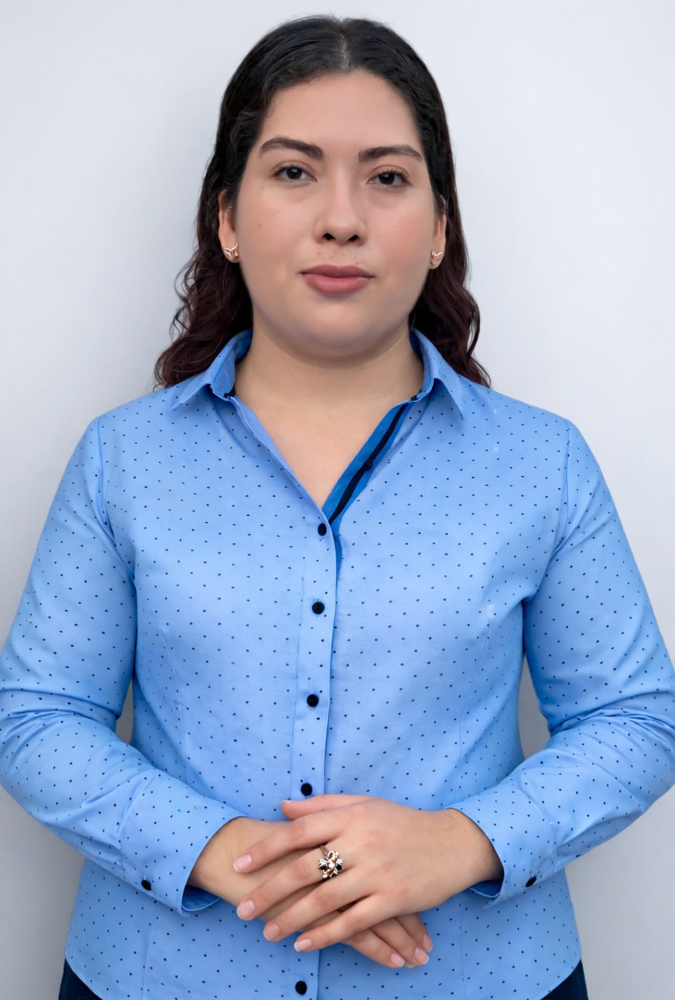
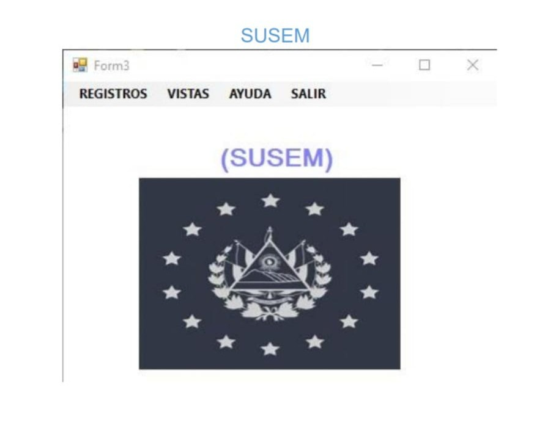
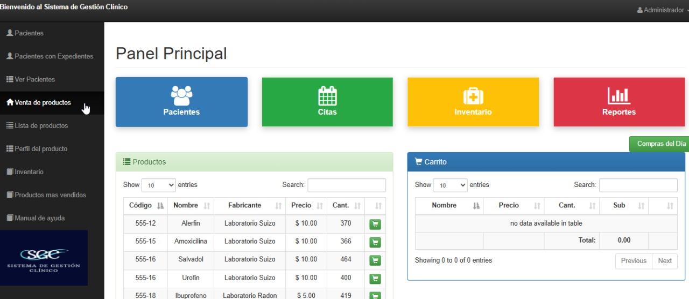
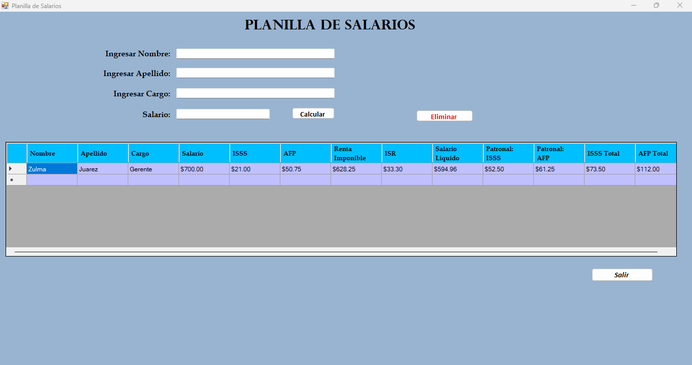

Hola, soy
Diseñando experiencias digitales intuitivas y funcionales

Soy Zulma Julissa Juárez Flores, con enfoque en UX/UI Design, apasionada por la creación de experiencias digitales intuitivas, funcionales y visualmente coherentes. Me interesa diseñar interfaces donde la estética y la usabilidad trabajen en conjunto para ofrecer soluciones claras y efectivas.
Prototipado y diseño UX/UI
Diseño gráfico y contenido visual
Estructuración de sitios web
Diseño y estilos responsivos
Modelado y diseño 3D

Sistema CLÍNICA EL MOLINO
Esta basado en la programación con formularios y clases.
Gestión clínico
Registro de pacientes, citas, recetas, etc.
Calculadora Salarial
Aplicación web